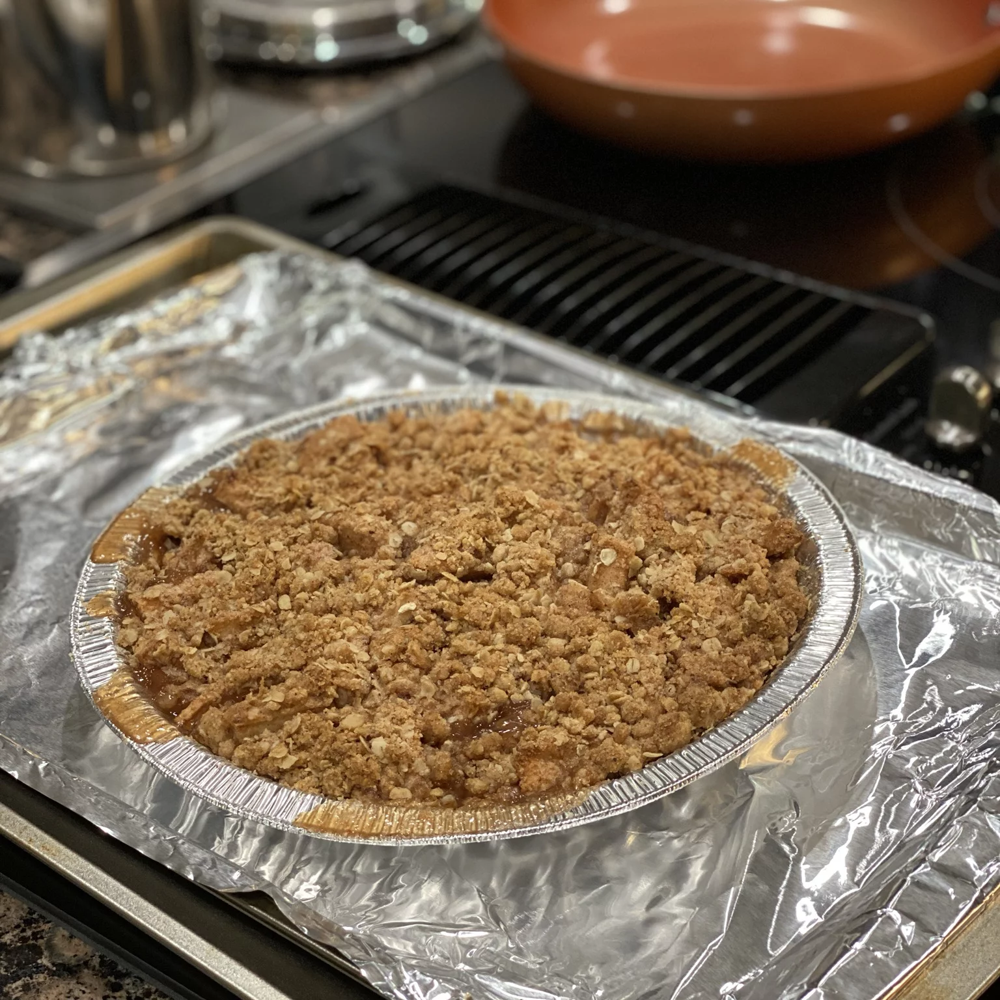

Apple Crisp/h1>

Ingredients
- 10 cups apples, peeled, cored, sliced
- 1 cup white sugar
- 1 tbsp flour
- 1 tsp cinnamon
- 1 cup oats
- 1 cup flour
- 1 cup brown sugar
- 1/4 tsp baking powder
- 1/4 tsp baking soda
- 1/2 cup water
- 1/2 bup butter, melted
Recipe Instructions
- Preheat oven to 350F, butter 8x8 dish
- In a mixing bowl, add chopped apples, sugar, and cinnamon
- In separate bowl, add topping ingrediets (brown sugar, oats, flour, cinnamon, salt, and butter
- Spread toppings over apples in baking dish. Bake 40-50 minutes until golden brown and bubbly
- Serve warm and enjoy